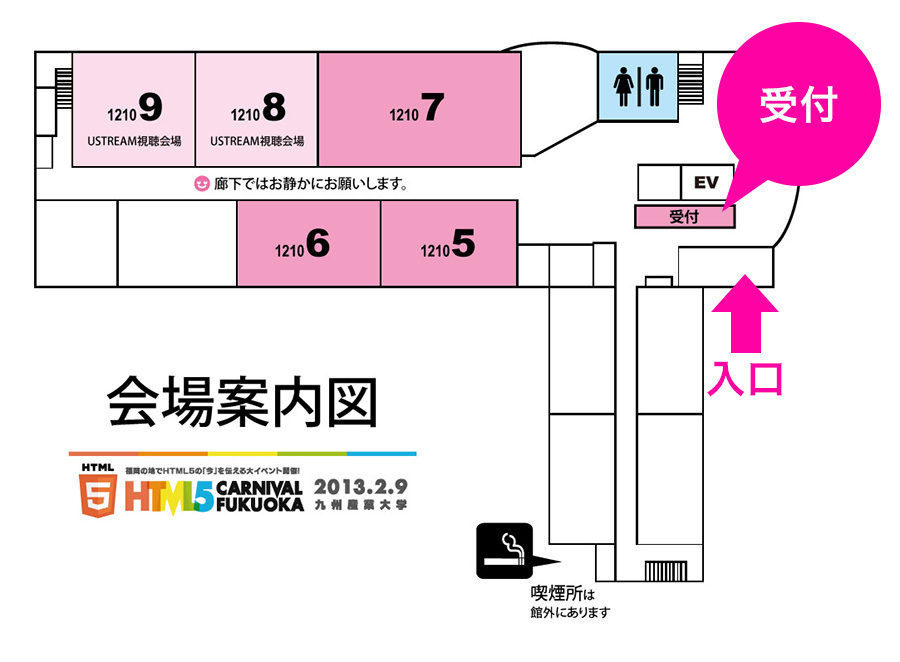

受付方法
受付方法
申し込み時に発行されたチケットを印刷し、当日会場受付までお持ちください。
◆チケットの発行について
チケットは、申し込み時にログインしたSNSアカウント別に以下の方法で発行されています。
- … ご自身のアカウントからDM(ダイレクトメッセージ)で発行通知
- … Facebook登録時のメールアドレスにメール送信
- mixi
- … 初回ログイン時に設定したメールアドレスにメール送信
Zusaarのイベントにログインし、「チケットを表示する」からも発行可能です。詳しい操作方法は以下を参考にしてください。
- イベントの申し込みページを表示する。
- 画面右上のログインボタンで【イベント登録時のSNSアカウント】でログインする。
- 画面右端に「受信メッセージ」、「チケットを表示する」、「キャンセルする」というボタンが表示されますので、
「チケットを表示する」をクリックする。 - 印刷して当日必ず持ってくる！！
- ※イベント申し込み時にメールもしくはSNSのDM宛てに「【Zusaar】イベントのチケットが発行されました。」というメッセージが届いているはずですので、そちらに記載されているURLでも確認可能です。
- ※「チケットを表示する」のボタンが表示されない場合、画面右上のご自分のアカウント名をクリックしてください。そのページに「参加しているイベント」のリストが表示されますので、そこに、「2013/02/09 HTML5 Carnival Fukuoka」と表示されていなければ、参加登録できていないことになります。ただし、【イベント登録時のSNSアカウント】でログインしていなければ、当然表示されませんのでご注意を。
受付の場所
受付は、12号館入り口正面となっております。
会場の九州産業大学 12号館までのアクセスは「会場アクセス」ページをご覧ください。
